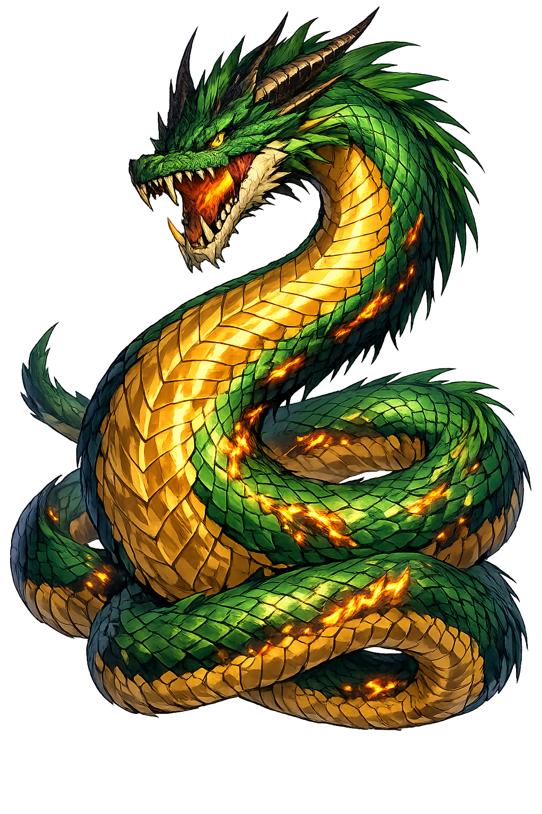

Stories of Drákōn
Every Greek dragon is a threshold made flesh: kill one and a sanctuary, a city, or a marriage becomes possible — which is why the founders of cities are all, sooner or later, dragonslayers.
The Homeric Hymn to Apollo (300–374) tells how the young god, still beardless, sought a site for his oracle and found the spring at Delphoi guarded by a great she-dragon — Typhaon’s nurse, they said, a plague on the flocks and fields of the people. From a hundred paces Apóllōn drew his silver bow and shot; the shaft transfixed her, and she writhed in the dust, gasping out her great breath. Then the god, master of the moment, mocked: “Now rot (pytheu) here upon the fruitful soil — no more will you be a bane to my parishioners.” From the rotting came the old name of the place, Pythō, and of its prophetess, Pythia; the god’s temple was raised beside the spring his arrow had freed. The myth means sanctuary and monster are one package in Greek religion: a god wins his holy place by killing what guarded it — the oracle’s authority is a dragon’s death certificate.
Sent from Phoenicia to find his sister Europa, Kadmos followed an oracle to a cow that would show him where to found a city. Where the cow lay down, the Ismenian spring flowed — guarded by a dragon, offspring of Árēs himself, which killed Kadmos’ men as they drew water. Kadmos hurled a rock that crushed the serpent’s head, then, on Athēnā’s counsel, sowed half its teeth in the plain. Armed men, the Spartoi, the “Sown,” rose from the furrows and at once fell to killing one another, until five remained — the ancestors of Thebes’ proudest houses. Kadmos did penance to Árēs for a year for the death of the god’s son, and the Theban king-list ever after carried the serpent’s blood. The myth means a city is founded on a killing that must be paid for: the polis begins as a debt, and its nobles are sprung, literally, from a dragon’s teeth.
Beyond Atlas, at the western edge of the world, stood the garden of the Hesperides, where a tree bore golden apples that Gaia had given Hēra at her wedding. Hesiod (Theogony 333–336) calls its guardian a coiling dragon “terrible, with a hundred voices,” offspring of Phorkys and Ketō — Ladon. Hēraklēs’ eleventh labor took the apples: finding the hundred-headed warden unwinnable by force, he sent Atlas for the fruit (or, in the second account, killed Ladon with an arrow) and carried the apples back through the world. Later stargazers set the dragon among the stars as Draco, coiled forever around the north celestial pole — the one constellation that never sets. The myth means the Greeks hung their monsters in the sky to be outlasted nightly by the turning world: even eternity, in their astronomy, is a guard-duty.
At the world’s eastern edge, in Árēs’ grove at Kolchis, the Golden Fleece hung in a sacred oak, watched by a dragon that Apollonius describes as vast as a fifty-oared warship — and which never closed its eyes in sleep: the sleepless warden made perfect. No hero could fight it. Mēdeia, priestess and granddaughter of the Sun, did what force could not: her song and her pharmaka — the charm of sleep — drenched the guardian; its great head drooped, its coils loosened, and Iásōn took the fleece from the tree. Ovid (Metamorphoses 7.149–158) keeps the telling detail that Mēdeia herself wept over the sleeping beast she had enchanted. It is the rare Greek dragon defeated not by the spear but by knowledge — by the very intelligence the Greeks called mētis. The myth means the Greeks knew some thresholds open only to the pharmakon: the warden that cannot be beaten can still be sung to sleep.
Guardian Serpents, Spring Wardens, and the Sown Teeth
Drákōn is not the fire-breathing hoard-guard of medieval romance but the Greeks' older idea: the enormous serpent that guards — a spring, a tree, a golden fleece, a goddess's shrine. His name comes from the verb "to see": the dragon is the one who never blinks.
From δέρκομαι, "to see" — the dragon's defining power is vigilance, not flame.
The earth-serpent of Delphoi slain by Apóllōn, whose rotting gave the site its old name, Pythō.
The hundred-headed warden of the Hesperides' golden apples, coiled in the sky as Draco.
Kadmos killed the Ismenian dragon and planted its teeth — an armed harvest, the Spartoi, sprang up.
From the original script to the living URL
Δράκων
The name in its original Greek form. Drákōn (Δράκων) is attested in the source tradition — “'The one who sees clearly' (from δέρκομαι, to see)”. Its long vowels and acute accents carry the full phonetic and orthographic weight of the source tradition.
drakon
Reduced to plain drakon, the name loses everything that made it specific: long vowels and acute accents. What remains is an ASCII string that machines can parse but that no longer speaks with its original voice.
Drákōn
The Unicode restoration recovers what ASCII flattened. Drákōn restores long vowels and acute accents, returning the name to its original written dignity. The domain encodes to Punycode, but the browser displays the truth.
Drákōn.com → xn--drkn-6na36d.com
The non-ASCII characters in Drákōn are encoded while the ASCII remains visible. To the DNS, it is Punycode. To humanity, it is Drákōn.
Owned, ideal, and ASCII forms of Drákōn
Drákōn
Restores Δράκων. The live temple domain — drákōn.com.
Drakōn
Restores Δράκων. LSJ convention: length only, no stress mark.
drakon
Flattens Δράκων. The plain ASCII fallback — what DNS and legacy systems see.
How Drákōn was spoken
How Drákōn is preserved in writing
A bespoke provenance study for Drákōn is being prepared by the PUNICODEX scholarly team.
Contribute scholarly provenance →Drákōn guards what cannot be owned: springs, trees, thresholds. The Greeks knew that every treasure worth having is held by something that watches — and that the hero's real labour is rarely the killing but the seeing: understanding what the dragon was protecting, and why.
Enter Extended Lore